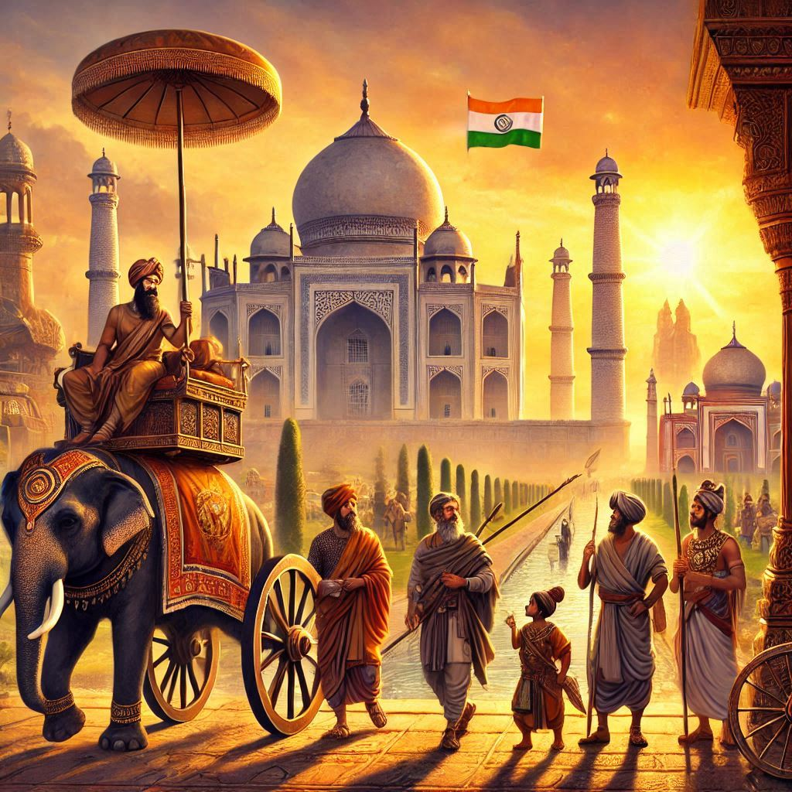
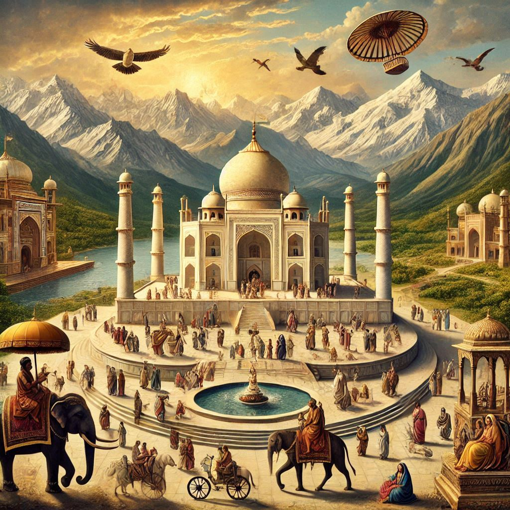

| SST PROJECT |
|
Topic: Why People Travelled to India in Ancient Times
Ancient India was a hub of activity, attracting people from far and wide. This project explores the reasons behind these journeys.
Motivations for Travel
- Trade: India's spices, textiles, and precious stones were highly sought after. Merchants travelled to trade these goods.
- Religion: Buddhism originated in India, drawing pilgrims to sacred sites.
- Knowledge: India was a center of learning, attracting scholars studying mathematics, astronomy, and more.
- Adventure: Some travelled simply to explore new lands and cultures.
Routes and Geographical Features
- Land Routes: The Silk Road connected East and West, passing through India via mountain passes like the Khyber Pass.
- Sea Routes: Ships sailed the Indian Ocean, connecting India with Southeast Asia, the Middle East, and East Africa, using monsoon winds.
- Favorable Geography: India's fertile plains, river valleys, and coastal regions supported trade and settlement.
|

 |